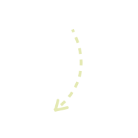

Track My Tasks

↵
Clean Dishes
Del
Do the Laundry
Del
Mend the Shoes
Del
Get some rest...
Del
Tips
Click on your task to mark it done.
Press the Del button to remove it.
Type in there to add a new task.